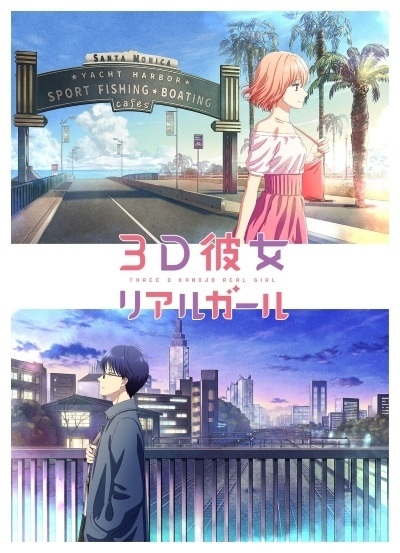
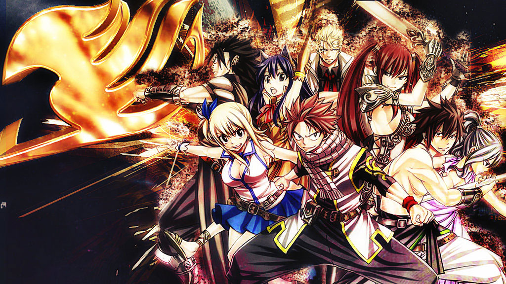
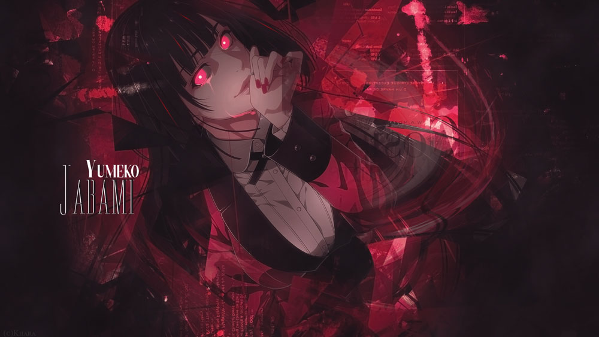

Daftar Judul Anime Terbaik Tayang Musim Dingin 2019
Seperti biasa, ada sangat banyak serial anime dari berbagai genre yang akan tayang. Semuanya memiliki cerita yang seru dan menarik untuk ditonton. Nah untuk memudahkan teman-teman semua, Chameleonime telah memilih sejumlah anime terbaik yang wajib kalian masukkan ke daftar tonton. Apa saja ya? Simak jadwal rilis anime musim winter 2019 dibawah ini.

1. 3D Kanojo: Real Girl 2nd Season
Ini merupakan season kedua dari serial anime 3D Kanojo : Real Girl. Mengisahkan tentang sosok Hikari Tsutsui yang terobsesi dengan hal berbau 2 dimensi seperti anime. Ia tidak terlalu punya banyak teman dan sering menghabiskan waktu bersama buku serta gadget miliknya. Suatu hari, dirinya dipertemukan dengan Iroha Igarashi yang merupakan gadis terpopuler di sekolahnya. Dari sanalah kedua insan ini mulai mengenal satu sama lain. Akankah Iroha akan mengubah cara hidup Hikari?
2. Date A Live III
Sudah lama ditunggu-tunggu oleh para fans anime, akhirnya musim ketiga anime Date a Live siap tayang. Pasti kamu juga sangat menantikan serial yang satu inikan? Masih melanjutkan kisah dimana Itsuka Shido harus berjuang untuk menyegel para spirit dengan cara berkencan dengen mereka. Pokoknya kalian jangan sampai melewatkannya ya guys.

3. Dimension High School
Sebuah serial yang mengusung cerita cukup unik dan tidak biasa. Berawal dari beberapa anak SMA yang secara tiba-tiba ditransfer ke dalam anime. Sejak saat itu mereka pun harus menjalani kehidupan sekolah di dunia yang baru tersebut. Serial yang satu ini bisa dibilang meng gabungkan live action dan juga anime. Pasti seru ya?

4. Domestic na Kanojo
Seorang siswa SMA, Fuji Natsuo telah jatuh cinta pada gurunya sendiri yang bernama Hina. Untuk melupakan perasaan tak biasa tersebut, ia pun mengikuti acara kencan buta bersama teman-temannya. Disanalah ia bertemu dengan seorang gadis cantik bernama Rui Tachibana. Setelah acara kencan tersebut berakhir, Rui malah mengajak Natsuo untuk mampir ke rumahnya. Disanalah hal tidak terduga terjadi, dimana mereka berdua melakukan hentai. Cerita pun berlanjut menjadi lebih serius dan kompleks ketika ayah Natsuo menikah lagi. Hal yang mengejutkan adalah dimana saat ibu barunya adalah Hina, guru yang ia sukai. Tidak hanya sampai disitu saja, bahkan saudara tiri nya saat ini adalah Rui yang pernah berhubungan dengannnya. Akankah cinta segitiga ini akan menemukan titik terangnya?

5. Fairy Tail Final Series (Fall 2018)
Melanjutkan masa tayang dari musim Fall 2018. Ini merupakan season terakhir dari serial anime Fairy Tail. Masih mengisahkan tentang petualangan Natsu bersama teman-temannya dalam menghadapi segala ancaman yang ada. Jangan sampai dilewatkan ya?
6. Hinomaru Zumou (Fall 2018)
Sama seperti Fairy Tail, serial Hinomaru Zumou Mendapatkan jatah sebanyak 24 eps. Oleh karena itu ia masih akan melanjutkan masa tayangnya pada musim dingin 2019 nanti. Berpusat pada seorang siswa berbadan kecil bernama Ushio Hinomaru. Meskipun badannya keci, namun cita-citanya adalah meraih gelar tertinggi dalam olahraga sumo. Bagaimana tekad dan usahanya untuk melawan segala halangan yang akan ia hadapi?

7. Jojo no Kimyou na Bouken: Ougon no Kaze (Fall 2018)
Adaptasi anime dari serial manga yang satu ini memang tidak pernah mengecewakan. Tak heran jika banyak penggemarnya yang selalu menantikan kisah petualangan Jojo dkk. Untuk cerita kali ini, nampaknya akan cukup lama karena akan berjumlah 39 episode. Jadi jangan khawatir, kalian akan puas melihat petualangan super cool dari Jojo.

8. Kakegurui××
Yeee… siapa yang sudah kangen dengan Jabami Yumeko? Kini ia siap untuk kembali menghibur kita semua dengan season kedua dari serial Kakegurui. Masih tentang keseharian di academy Hyakkaou yang memiliki kurikulum tidak biasa. Tidak seperti sekolah pada umumnya, segala hal di academy tersebut ditentukan dengan judi. Siapa yang menang akan menjadi raja dan yang kalah menjadi budak. Kedatangan Yumeko sebagai maniak judi cukup memberikan kisah besar di academy tersebut.
9. Kemono Friends 2
Siapa sih yang tidak tahu dengan serial Kemono Friends ini? Apa, ada yang belum pernah menontonnya? Wah, jangan sampai ketinggalan ya guys karena serial yang satu ini cukup menarik untuk ditonton. Dan beberapa waktu lalu pihak Staff telah mengumumkan project baru untuk serial adaptasi Kemono Friends.

10. Mob Psycho 100 II
Setelah lama beritanya simpang siur, akhirnya musim kedua Mob Psycho 100 siap untuk rilis. Berpusat pada sosok Shigeo Kageyama atau yang sering dipanggil Mob. Ia memiliki kekuatan supernatural yang sangat besar. Namun dirinya lebih memilih untuk tidak menggunakannya dan berusaha dengan caranya sendiri. Akan tetapi berbagai ancaman mulai muncul dan ingin mengacaukan kehidupannya yang biasa. Akankah Mob menggunakan kekuatan yang selama ini ia sembunyikan?

11. Piano no Mori 2nd Season
Season pertama dari serial ini cukup memuaskan para penggemar anime. Dan kini kita sudah siap untuk dihibur kembali dengan musim keduanya. Bercerita tentang 2 anak laki-laki yang mempunyai hobi sama dalam hal piano. Namun keduanya berasal dari latar belakang yang sangat berbeda. Shuuhei lahir dari sebuah keluarga pianis yang sangat terkenal, sedangkan Kai hanyalah anak dari seorang pelacur. Namun takdir menghubungkan kedua anak ini dengan cara yang ajaib.

12. Saiki Kusuo no Psi-nan Conclusion
Sebenarnya ini bukanlah sebuah serial TV namun hanya berjumlah 1 eps berdurasi 55 menit. Ia akan menampilkan kesimpulan dari kisah dalam serial yang satu ini. Sudah siap kembali menyaksikan kehidupan absurd Saiki bersama dengan teman-temannya?

13. Sword Art Online: Alicization (Fall 2018)
Seri anime SAO memang selalu menyajikan kisah menarik dan juga seru. Untuk arc Alicization nampaknya akan cukup panjang sehingga masih tayang Winter 2019 nanti. Kali ini Kirito kembali masuk ke dunia game tanpa mengingat kejadian sebelumnya. Ia pun dipertemukan dengan seorang anak laki-laki yang nampak seperti NPC namun seperti memiliki perasaan layaknya manusia. Ketika ingin mencari petunjuk tentang penyebab dirinya ada disana, Kirito malah teringat kenangan masa lalu saat ia masih kecil. Sosok anak laki-laki dan perempuan yang pernah mengisi harinya di masa lalu.

14. Tate no Yuusha no Nariagari
Yosh, siapa yang sudah lama menunggu adaptasi anime ini? Bercerita tentang sosok Iwatani Naofumi yang secara tiba-tiba dipanggil ke dunia parallel. Disana ia menjadi pahlawan perisai yang merupakan salah satu dari 4 pahlawan legendaris. Mereka telah diramalkan untuk menjadi penyelamat dari dunia tersebut. Namun pahlawan perisai merupakan sosok yang terlemah daripada yang lainnya. Dan Nao pun mengalami banyak masalah karena hal tersebut. Sanggupkah ia bangkit dan memenuhi takdirnya untuk menyelamatkan dunia?

15. Tensei Shitara Slime Datta Ken (Fall 2018)
Satoru Mikami adalah laki-laki berumur 37 tahun yang mengalami kebuntuan dalam hidupnya. Suatu hari ia bernasib sial dan sekarat karena mengalami perampokan. Namun setelah kejadian itu dirinya malah terbangun di dunia fantasy sebagai sebuah slime. Disinilah kehidupan barunya dimulai ketika ia bisa mewujudkan keinginannya bersama para gadis cantik.

16. Toaru Majutsu no Index III (Fall 2018)
Memang membutuhkan penantian yang panjang, namun akhirnya season ketiga Toaru Majutsu no Index rilis pada Fall 2018. Seperti kabar yang beredar, ia akan mendapatkan jatah sebanyak 26 episode. Oleh karena itu ia masih dijadwalkan tayang pada musim Winter 2019 ini. Melanjutkan kisah Kamijou Touma yang merupakan seorang esper level 0 dan tidak memiliki kekuatan supernatural. Namun dirinya punya kemampuan unik bernama Imagine Breaker yang bisa menetralkan segala macam kekuatan. Pertemuan dirinya dengan gadis bernama Index membawanya ke dalam pertempuran yang selama ini tidak pernah ia alami.

Itulah rekomendasi anime terbaik yang akan rilis pada season winter tahun 2019 nanti. Ada sangat banyak serial menarik dan paling ditunggu yang wajib kalian tonton guys. Nah bagi yang penasaran untuk musim depan, silahkan lihat di Daftar Anime Terbaik Tayang Spring 2019.Jangan lupa untuk bookmark serta share artikel ini agar semakin banyak teman-teman yang tahu. Arigatou Gozaimasuu..
Web Anime
web yang berisi tentang artikel,informasi fakta unik seputar anime.
Email:kushitoukarivaille31224@gmail.com
WA:083175624575
Menu
Media Sosial
Copyright © 2019 - Web Anime